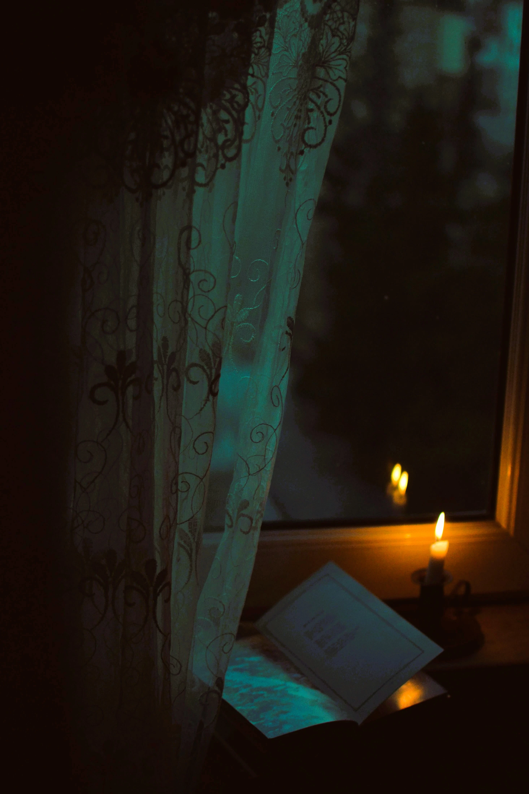

Introduction
Il existe des livres que l'on referme sans difficulté. L'histoire s'achève, les personnages nous quittent, et la vie reprend son cours habituel. D'autres œuvres nous accompagnent bien après la dernière page. Nous continuons à penser à ceux que nous avons rencontrés au fil du récit. Nous nous demandons ce qu'ils seraient devenus. Nous imaginons leurs chemins futurs. Parfois même, nous avons l'impression de les reconnaître dans les visages croisés au hasard des jours. Ces personnages semblent refuser de disparaître. Ils demeurent quelque part entre la mémoire et l'imagination, dans cette région discrète où les histoires continuent de vivre lorsque les livres sont fermés. Mais ce phénomène ne concerne pas seulement les lecteurs. Les auteurs eux-mêmes connaissent parfois cette étrange présence. Certains personnages les accompagnent durant des années. Ils les suivent d'un manuscrit à l'autre. Ils reviennent dans leurs pensées longtemps après que l'encre a séché. Comme s'ils avaient décidé de poursuivre leur existence au-delà de leur créateur.

Quand l'auteur ne parvient plus à les quitter
On imagine souvent qu'un écrivain abandonne ses personnages une fois le livre terminé. La réalité est parfois différente. De nombreux auteurs ont raconté avoir vécu pendant des années en compagnie de leurs créations. Non parce qu'ils les confondaient avec la réalité, mais parce qu'ils les connaissaient avec une intimité particulière. Ils savaient ce qu'ils craignaient. Ce qu'ils espéraient. Ce qu'ils auraient répondu à une question imprévue. À mesure qu'un personnage se construit, il acquiert une cohérence propre. Il cesse d'obéir entièrement à son auteur. Il commence à suivre la logique de son caractère. C'est sans doute l'un des paradoxes les plus fascinants de l'écriture : l'écrivain invente un être fictif, puis découvre progressivement qui il est. Lorsque le livre s'achève, cette présence ne disparaît pas toujours. Elle demeure quelque part dans l'atelier intérieur où naissent les histoires. Comme une voix devenue familière.
Ceux qui survivent à leur créateur
Certains personnages franchissent encore une autre frontière. Ils survivent à leur auteur. Des siècles après leur création, ils continuent d'exister dans l'imaginaire collectif. Sherlock Holmes enquête toujours dans les rues embrumées de Londres. Dracula poursuit sa route dans les châteaux de l'Europe nocturne. Le capitaine Nemo navigue encore sous les mers. Le corbeau d'Edgar Allan Poe répète inlassablement son mystérieux « Jamais plus ». Leurs créateurs ont disparu depuis longtemps. Pourtant, leurs personnages demeurent. Ils traversent les générations. Ils changent de lecteurs, de langues, parfois même de formes. Ils deviennent plus grands que les livres qui les ont vus naître. C'est peut-être la forme d'immortalité la plus singulière que la littérature puisse offrir. Non pas celle de l'auteur. Mais celle de ses créatures.
Pourquoi nous revenons toujours vers eux
Nous revenons vers certains personnages parce qu'ils nous rappellent quelque chose d'essentiel. Ils nous parlent de nos propres combats. De nos doutes. De nos rêves. Ils mettent des mots sur des émotions que nous peinons parfois à exprimer nous-mêmes. À travers eux, nous apprenons à mieux comprendre ce que signifie être humain. C'est pourquoi certaines figures de fiction continuent de nous accompagner toute une vie. Elles vieillissent avec nous. Et lorsque nous relisons leurs histoires des années plus tard, nous découvrons qu'elles n'ont pas changé. C'est nous qui sommes devenus différents.
Conclusion
Peut-être que la frontière entre le réel et la fiction s'avère bien plus poreuse qu'il n'y paraît. Les personnages qui nous hantent, qu'ils soient nés de la plume d'un autre ou forgés dans le secret de notre propre esprit, ne sont pas de simples spectres de papier. Ils sont les gardiens de nos émotions, les miroirs de nos vulnérabilités et les témoins silencieux de notre propre évolution.
« Certains personnages ne meurent jamais. Ils changent simplement de lecteur. »
Gardien des archives du Veilleur